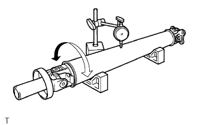
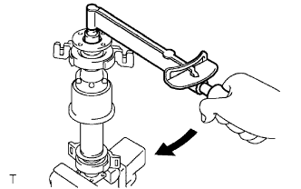
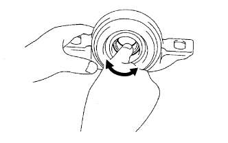
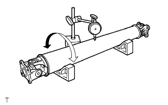
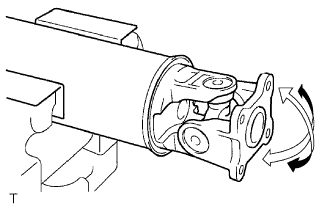
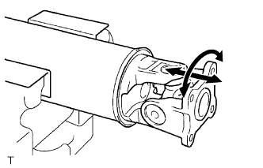

プロペラシャフト ウィズ センタベアリングASSY（4WD） 点検 |
| 1. プロペラシャフトASSY点検 |
|  |
シャフトチューブに損傷がないことを点検する。
VブロックにプロペラシャフトASSYをセットし、ダイヤルゲージを使用してプロペラシャフトASSYの振れを点検する。
| 2. プロペラシヤフトカツプリングASSY点検 |
|  |
インタミディエイトシャフトASSYを図のようにバイスに固定し、トルクレンチを使用して、カップリングの回転中の作動トルクを点検する。
| 点検項目 | 基準 |
|---|---|
| トルクレンチの回転速度と作動トルクの変化 | トルクレンチの回転速度の増加にともない作動トルクが増加する。 |
カップリング部からオイル漏れがないことを点検する。
| 3. センタサポート ベアリングASSY NO.1点検 |
|  |
センタサポートベアリングASSY No.1の中心から外周方向に力を加えながら回転させて、ガタ、引っ掛かりおよびブラケット部に亀裂、変形がないことを点検する。
| 4. プロペラシヤフトASSY RR点検 |
|  |
シャフトチューブに損傷がないことを点検する。
VブロックにプロペラシャフトASSY RRをセットし、ダイヤルゲージを使用して、プロペラシャフトASSY RRの振れを点検する。
| 5. ユニバーサルジョイントスパイダーASSY点検 |
アルミ板を介して、プロペラシャフトASSYおよびプロペラシャフトASSY RRをバイスに固定する。
|  |
スパイダー部を回転させ引っ掛かりがないかを点検する。
|  |
両手で強く各スパイダー部を軸方向、直角方向にゆすり、ジョイント部にガタがないかを点検する。